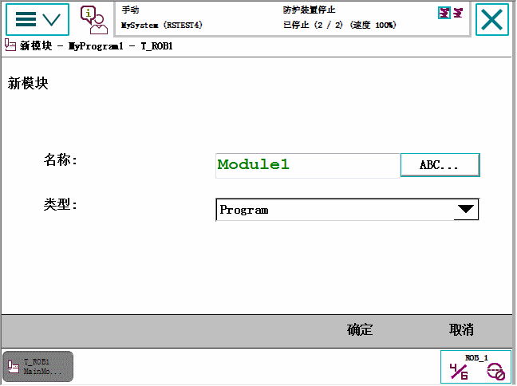
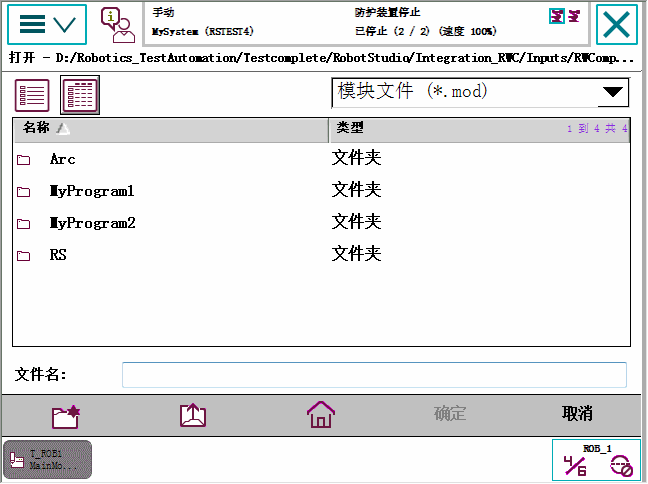
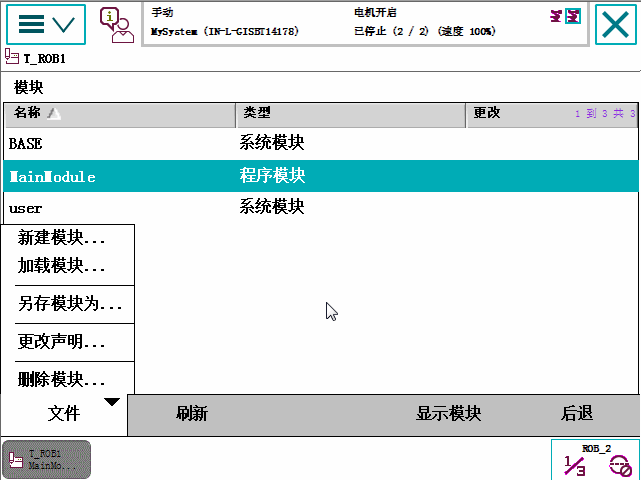

本节详细介绍如何处理程序 模块。即：
创建新模块
加载现有模块
保存模块
重命名模块
删除模块
本节介绍创建新模块的方法。
操作
1
在 ABB 菜单中，点击 Program Editor（程序编辑器）。
2
点击 Modules（模块）。
3
点击 File（文件），然后点击 New Module（新建模块）。

4
点击 ABC...并使用软键盘输入新模块的名称。然后点击 OK（确定） 关闭软键盘。
5
选择要创建的模块类型：
Program
System
然后点击 OK（确定）。
有关如何切换模块类型的详情，请参阅更改模块类型 一节。
本节介绍如何加载现有模块。
点击 File（文件），然后点击 Load Module（加载模块）。

定位要加载的模块。请参阅FlexPendant 资源管理器一节。可定义默认路径，详情请参阅设置默认路径一节。
点击 确定 ，然后点击选择您要加载的模块。
模块将加载.
本节介绍如何保存模块。
点击 Modules（模块） 并点击选择要加载的模块。
点击 File（文件），然后点击 Save Module As...（模块另存为…）。

点击建议的文件名，使用软键盘输入模块名称。然后点击 确定 。
使用文件搜索工具确定用于保存模块的位置。请参阅FlexPendant 资源管理器一节。默认的位置位于控制器磁盘上，但也可将其它任何位置设置为默认路径，详情请参阅设置默认路径一节。
然后单击 OK（确定）。
模块即被保存.
本节介绍如何重命名模块。
点击 File（文件），然后点击 Rename Module...（重命名模块...）
一个软键盘显示。
使用软键盘输入模块名称。然后点击 确定并选择要更改的模块。
本节介绍如何更改模块的类型。
点击 Modules（模块）并选择要更改的模块。
点击 File（文件），然后点击 Change declaration...（更改声明...）
点击 Type（类型）并选择模块类型。
单击 OK（确定）。
本节介绍如何从内存删除模块。如果模块已保存到硬盘，则不能从硬盘删除。
点击 Modules（模块）并点击选择要删除的模块。
点击 File（文件），然后点击 Delete Module...（删除模块...）
一个对话框显示。
点击 确定 删除模块而不予保存。
如果您想首先保存模块，请点击 Cancel（取消） 并首先保存模块。
有关如何保存模块的详情，请参阅 保存模块 一节。